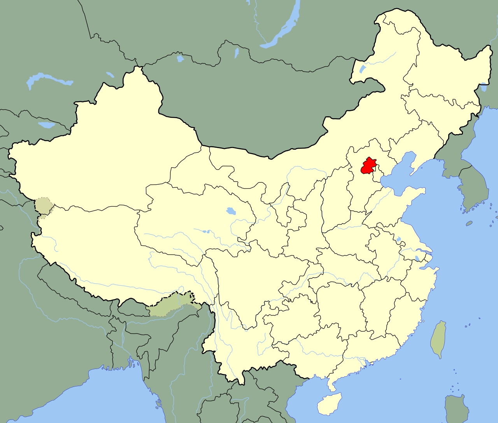

배우 나문희,
인터넷에서는 호박고구마란 명대사로 알려진 원로배우다.

그런데 놀랍게도 나문희의 '출생지'는 중화민국 시절 베이핑 (현 베이징)으로 밝혀졌다.
심지어 나문희가 태어날 당시 베이핑은 일본 제국의 괴뢰국인 '왕징웨이 정권'이 점령한 지역이었다.
그 후 1945년 베이핑은 중화민국 국민정부에 의해 수복되었으며 그때 한국인인 나문희의 가족은 경기도 수원으로 이주했다. (당시 나문희 나이 5세)
결론: 나문희의 '출생지'는 중화민국 베이핑이지만 '출신지'는 대한민국 수원으로 봐야한다.


엘베 탈때 내릴때마다 문희 다칩니다라고 자꾸들려서 혼자 키득거림 ㅋㅋㅋㅋㅋㅋ